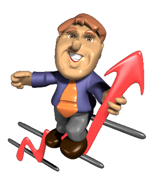
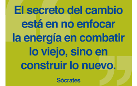

Los altos niveles de competencia, la internacionalización económica y la aparición de nuevas tecnologías son solo tres de los muchos factores que han presionado el cambio en las organizaciones y los procesos de renovación, que se basan en la innovación permanente, son ahora una constante empresarial.
La vida de las corporaciones es un mar de cambios en el que algunas veces hay grandes mareas y otras veces hay calma, pero siempre hay oleaje. Día a día las empresas enfrentan nuevos retos, ya sea una organización consolidada o una pequeña empresa que apenas está empezando siempre se presentan cuestiones nuevas que inciden en su comportamiento y en su desempeño.

La gestión del cambio no consiste en implantar nuevos modelos de gestión que a la postre resultan ser solamente teorías pasajeras, más bien consiste en aprovechar los cambios del entorno empresarial para el bien de la firma, por ello, las compañías no solo deben ser flexibles sino que quienes las manejan deben desarrollar una aguda percepción para anticiparse a los cambios y poder estar así siempre a la vanguardia. Richard Pascale [1] recomienda hacer énfasis en plantear preguntas más que en buscar respuestas, en orden de obtener procesos de renovación continuos y exitosos, Pascale sugiere que las compañías deben convertirse en "motores de indagación" si quieren obtener provecho de los cambios y de los conflictos que vienen con ellos.
